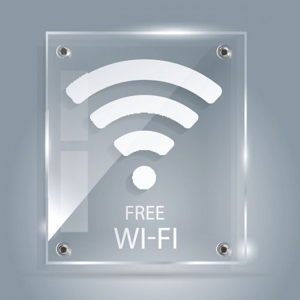
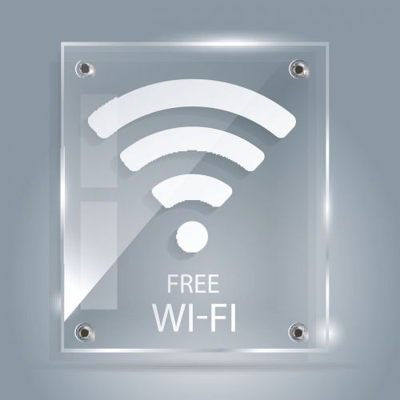

Что такое УФ печать?
УФ печать на акриле – оригинальный и быстрый способ дизайнерского украшения коммерческих и жилых интерьеров. Популярность технологии обусловлена тем, что она позволяет создавать эксклюзивные и долговечные фотоизображения, которые отличаются яркостью и сочностью, стойкостью к износу и доступной ценой.
Для УФ печати на органическом стекле используют белые и цветные чернил, а также лак. Сам материал бывает матовый и глянцевый, прозрачный, полупрозрачный, молочный или цветной. УФ печать позволяет создать как гладкие, так и рельефные или 3D изображения за счет использования белых чернил и лака.

 

В чем особенность УФ печати на акриле?
Оргстекло – идеально ровный листовой материал с гладкой поверхностью без микропор. При нанесении
изображения
краски не
проникают внутрь основания, а фиксируются (запечатываются) на нем за счет термообработки
ультрафиолетовым
светом.
Исключительная особенность технологии – ультраточная передача цветовой и оттеночной палитры. Готовые
изображения
отличаются фотографическим UltraHD качеством – реалистичными, насыщенными и ровными цветами, прекрасной
детализацией и
читаемостью даже мелких изображений.
Сфера применения УФ печати на акриле
Технология открывает перед дизайнерами неограниченные возможности по наружному и внутреннему оформлению. Акрил универсален – поддается лазерной и фрезерной резке, сверлится, гнется и гравируется. Материал гибок и пластичен, что позволяет создавать из него изделия любых форм.
УФ печать на акриле используют в следующих сферах:
- производство рекламных конструкций;
- дизайнерское оформление интерьеров;
- украшение дверей и витрин магазинов;
- оформление офисных перегородок;
- декор внутренних поверхностей;
- украшение кухонных фартуков и панелей;
- производство POS-материалов (POSM).
Оргстекло – долговечный искусственный материал, устойчивый к воздействию влажности и солнца, низких и высоких температур. Это лучшее решение для изготовления рекламных и POS-конструкций с подсветкой – световых вывесок и акрилайтов, ситилайтов и лайтбоксов. Совмещение акрила с УФ печатью, подсветки и гравировки позволяет создавать дизайнерские продукты с уникальной визуализацией.
Оформление заявок онлайн, выгодные цены в Санкт-Петербурге
Компания «Моя Печать» – команда энергичных и амбициозных профессионалов с креативным мышлением. С
удовольствием выполним
заказ на полиграфические услуги с брендированием и персонализацией любой сложности в кратчайшие сроки.
Поможем с
адаптацией или разработкой авторского дизайна. Подскажем, где можно сэкономить, а где не нужно.
Цена УФ печати на акриле зависит от объемов партии и сложности поставленной задачи. Каждый заказчик
может рассчитывать
на подробные консультации, персональный подход, европейский сервис и гибкие приятные тарифы, позволяющие
сэкономить.
Указана стоимость УФ-печати за 1м2 без учета материала.
Печать без учета белого цвета. Печать с белым цветом + 50% к стоимости.